Lines and Angles
Section 2.4
Page No. 15
Figure it Out
Q.1.
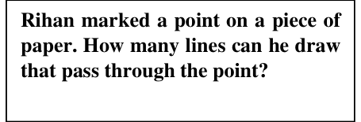
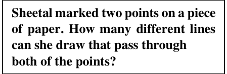
Can you help Rihan and Sheetal find their answers?
Ans. Rihan can draw many/uncountable number of lines through the given point.
Sheetal can draw only one line through the two given points.
Q.2. Name the line segments in Fig. 2.4. Which of the five marked points are on exactly
one of the line segments? Which are on two of the line segments?
Ans. \(\overline{LM}\), \(\overline{MP}\), \(\overline{PQ}\), \(\overline{QR}\)
Points L and R are exactly on one line segment. Points M, P and Q are on two line segments.
Q.3. Name the rays shown in Fig. 2.5. Is T the starting point of each of these rays?
Ans. \(\overrightarrow{TA}\), \(\overrightarrow{TB}\), \(\overrightarrow{TN}\) and \(\overrightarrow{NB}\)
No, T is the starting point of \(\overrightarrow{TB}\), \(\overrightarrow{TN}\) and \(\overrightarrow{TA}\) but not of \(\overrightarrow{NB}\).
Q.4. Draw a rough figure and write labels appropriately to illustrate each of the
following:
- OP and OQ meet at O.
- XY and PQ intersect at point M.
- Line l contains points E and F but not point D.
- Point P lies on AB.
Ans.
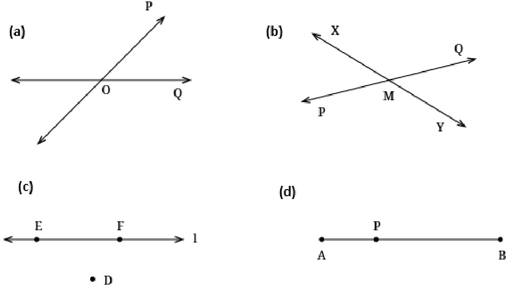
Q.5. In Fig. 2.6, name:
- Five points
- A line
- Four rays
- Five line segments
Ans.
- D, E, O, B and C
- \(\overleftrightarrow{DE}\) or \(\overleftrightarrow{DO}\) or \(\overleftrightarrow{DB}\) or \(\overleftrightarrow{EO}\) or \(\overleftrightarrow{EB}\) or \(\overleftrightarrow{OB}\)
- \(\overrightarrow{OC}\), \(\overrightarrow{OB}\), \(\overrightarrow{OE}\), \(\overrightarrow{OD}\) (Try for other rays)
- \(\overline{DE}\), \(\overline{DO}\), \(\overline{DB}\), \(\overline{EO}\), \(\overline{EB}\) (\(\overline{OB}\); \(\overline{OC}\) are also possible)
Q.6. Here is a ray OA (Fig. 2.7). It starts at O and passes through the point A. It also passes through the point B.
- Can you also name it as OB? Why?
- Can we write OA as AO? Why or why not?
Ans. a) Yes, O is the starting point and point B lies on the rays that goes endlessly in the direction of A. \(\overrightarrow{OA}\) is the extension of \(\overrightarrow{OB}\).
b) No, OA is a ray with starting point O whereas AO is a ray with starting point A.
Section 2.5
Page – 19
Figure it Out
Q.1. Can you find the angles in the given pictures? Draw the rays forming any one of the
angles and name the vertex of the angle.
Ans. Yes, one of the angles is \(\angle BDC\). It’s vertex is D. One ray is \(\overrightarrow{DC}\) and the other rays \(\overrightarrow{DB}\).
Try for other pictures.
Q.2. Draw and label an angle with arms ST and SR.
Ans.
Q.4. Name the angles marked in the given figure.
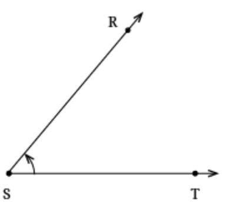
Ans. \(\angle RTQ\), \(\angle RTP\)
Q.5. Mark any three points on your paper that are not on one line. Label them A, B, C.
Draw all possible lines going through pairs of these points. How many lines do you get? Name them. How many angles can you name using A, B, C? Write them down, and mark each of them with a curve as in Fig. 2.9.
Ans. We get three lines \(\overleftrightarrow{AB}\), \(\overleftrightarrow{BC}\), \(\overleftrightarrow{CA}\).
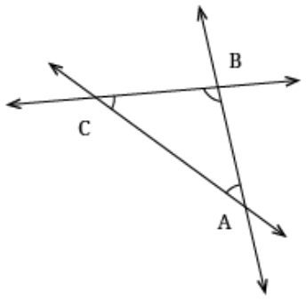
Using A, B & C we can name three angles: \(\angle ABC\) or \(\angle CBA\), \(\angle BCA\) or \(\angle ACB\) & \(\angle CAB\)
or \(\angle BAC\).
Q.6. Now mark any four points on your paper so that no three of them are on one line. Label them
A, B, C, D. Draw all possible lines going through pairs of these points. How many lines do you get? Name them. How many angles can you name using A, B, C, D? Write them all down, and mark each of them with a curve as in Fig. 2.9.
Ans. We get six lines \(\overleftrightarrow{AB}\), \(\overleftrightarrow{BC}\), \(\overleftrightarrow{CD}\), \(\overleftrightarrow{DA}\), \(\overleftrightarrow{AC}\) & \(\overleftrightarrow{BD}\)
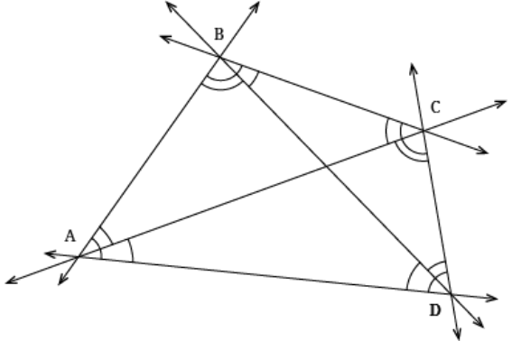
Using A, B, C & D we can name the following angles \(\angle BAC\), \(\angle CAD\), \(\angle BAD\), \(\angle ADB\),
\(\angle BDC\), \(\angle ADC\), \(\angle DCA\), \(\angle ACB\), \(\angle DCB\), \(\angle CBD\), \(\angle DBA\) & \(\angle CBA\)
Section 2.6
Page 20 Is it always easy to compare two angles?
No. it is not always easy to compare two angles. For eg. \(89 ^{\circ}\) & \(91 ^{\circ}\) angles cannot be compared without measuring or overlapping. But for the given figures, comparison is easy.
Page 23
Where else do we use superimposition to compare? A few examples are- line segments, squares and circles. Think of more.
Figure it out
Q.1. Fold a rectangular sheet of paper, then draw a line along the fold created. Name and
compare the angles formed between the fold and the sides of the paper. Make different angles by folding a rectangular sheet of paper and compare the angles. Which is the largest and smallest angle you made?
Ans.
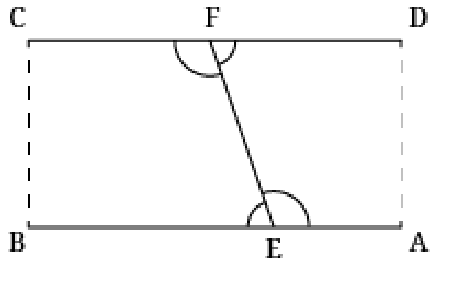
Angles Formed: \(\angle AEF\), \(\angle BEF\), \(\angle DFE\), \(\angle CFE\)
Here \(\angle AEF\) & \(\angle CFE\) are larger than \(\angle BEF\) & \(\angle DFE\)
Try more cases by folding rectangular sheets in different ways.
Q.2. In each case, determine which angle is greater and why.
- \(\angle AOB\) or \(\angle XOY\)
- \(\angle AOB\) or \(\angle XOB\)
- \(\angle XOB\) or \(\angle XOC\)
Discuss with your friends on how you decided which one is greater.
Ans. (a)- \(\angle AOB\); \(\angle XOY\) is an acute angle and \(\angle AOB = \angle AOX + \angle XOY+ \angle YOB\)
(b)- \(\angle AOB\)
(c) – None. \(\angle XOB = \angle XOC\)
Q.3. Which angle is greater: \(\angle XOY\) or \(\angle AOB\)? Give reasons.
Ans. By looking at the figure we cannot say. Superimposition or measurement is necessary here.
Section 2.8
Page 28
Q. Is it possible to draw \(\overrightarrow{OC}\) such that the two angles are equal to each other in size?
Ans. Yes, when \(\overrightarrow{OA}\) and \(\overrightarrow{OB}\) overlap each other on folding the Vidya’s notebook, the crease OC will divide \(\angle AOB\) in two equal sized angles.
Page 29
Q. If a straight angle is formed by half of a full turn, how much of a full turn will form a right angle?
Ans. \(\frac{1}{4}\) of a full turn.
Section 2.8
Page No. 29
Figure it Out
Q.4. Get a slanting crease on the paper. Now, try to get another crease that is perpendicular to the slanting crease.
- How many right angles do you have now? Justify why the angles are exact right angles.
- Describe how you folded the paper so that any other person who doesn’t know the process can simply follow your description to get the right angle.
Ans. a. Four right angle. Each angle is \(\frac{1}{4}\) the of the complete angle.
b. Explore different ways of doing it.
Page 31
Figure it Out
Q.2. Make a few acute angles and a few obtuse angles. Draw them in different
orientations.
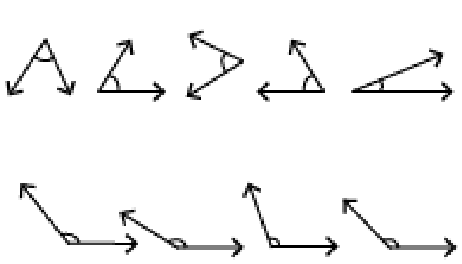
Ans. Acute angle
Obtuse angle
Q.3. Do you know what the words acute and obtuse mean? Acute means sharp and obtuse
means blunt. Why do you think these words have been chosen?
Ans. In acute angles the opening of the edges is lesser than the obtuse angle which have larger
openings.
Q.4. Find out the number of acute angles in each of the figures below. What will be the
next figure and how many acute angles will it have? Do you notice any pattern in the numbers?
Ans. (i) three
(ii) Twelve
(iii) Twenty-one
The next figure will have thirty acute angles.
Yes, the pattern is \(3 \times 0 + 1\), \(3 \times 1 + 1\), \(3 \times 2 + 1\), \(3 \times 3 + 1\),…
The number 0,1,2,3,4,….. are number of inner triangles.
Section 2.9
Page No. 35
Figure it out
Q.1. Write the measures of the following angles:
- \(\angle KAL\)
- \(\angle WAL\)
- \(\angle TAK\)
Ans. a. \(\angle KAL = 30 ^{\circ}\) Yes, it is possible to count the number of units in 5s or 10s.
b. \(\angle WAL = 50 ^{\circ}\)
c. \(\angle TAK = 120 ^{\circ}\)
Page No. 36
Q. Name the different angles in the figure and write their measures.
Ans. \(\angle POQ = 35 ^{\circ}\)
\(\angle POR = 95 ^{\circ}\)
\(\angle POS = 125 ^{\circ}\)
\(\angle POT = 160 ^{\circ}\)
\(\angle QOR = 60 ^{\circ}\)
\(\angle QOS = 90 ^{\circ}\)
\(\angle QOT = 125 ^{\circ}\)
\(\angle QOU = 145 ^{\circ}\)
\(\angle ROS = 30 ^{\circ}\)
\(\angle ROT = 65 ^{\circ}\)
\(\angle ROU = 85 ^{\circ}\)
\(\angle SOT = 35 ^{\circ}\)
\(\angle SOU = 55 ^{\circ}\)
\(\angle TOU = 20 ^{\circ}\)
Page No. 40
Think!
Q. In Fig. 2.20, we have \(\angle AOB = \angle BOC = \angle COD = \angle DOE = \angle EOF = \angle FOG =\)
\(\angle GOH = \angle HOI=\underline{\qquad}\). Why?
Ans. Each of the angles \(= 22.5 ^{\circ}\)
As the straight angle of \(180 ^{\circ}\) is divided into eight equal parts so each of the right angles will be of measure \(= \frac{180 ^{\circ} }{8} = 22.5 ^{\circ}\)
Figure it Out
Q.1. Find the degree measures of the following angles using your protractor.
Ans. \(\angle IHJ = \angle JHI = 47 ^{\circ}\)
\(\angle GHK = \angle IHJ = 23 ^{\circ}\)
\(\angle IHJ = \angle JHI = 108 ^{\circ}\)
Q.3. Find the degree measures for the angles given below. Check if your paper protractor
can be used here!
Ans. \(\angle IHJ = 42 ^{\circ}\) , \(\angle IHJ = 116 ^{\circ}\)
No, paper protractor cannot work here.
Q.4. How can you find the degree measure of the angle given below using a protractor?
Ans. Measure of marked angle \(= 360 ^{\circ} -\) Measure of unmarked angle
\(= 360 ^{\circ} - 100 ^{\circ} = 260 ^{\circ}\)
Try other ways to find the marked angle
Q.5. Measure and write the degree measures for each of the following angles:
Ans.
- \(80 ^{\circ}\)
- \(120 ^{\circ}\)
- \(60 ^{\circ}\)
- \(130 ^{\circ}\)
- \(130 ^{\circ}\)
- \(60 ^{\circ}\)
Q.6. Find the degree measures of \(\angle BXE\), \(\angle CXE\), \(\angle AXB\) and \(\angle BXC\).
Ans. \(\angle BXE = 115 ^{\circ}\) , \(\angle CXE = 85 ^{\circ}\) , \(\angle AXB = 65 ^{\circ}\), \(\angle BXC = 30 ^{\circ}\)
Q.7. Find the degree measures of \(\angle PQR\), \(\angle PQS\) and \(\angle PQT\).
Ans. \(\angle PQR =45 ^{\circ}\), \(\angle PQS=100 ^{\circ}\), \(\angle PQT=150 ^{\circ}\).
Page 45
Figure it Out
Q.1. Angles in a clock:
- The hands of a clock make different angles at different times. At 1 o’clock, the angle between the hands is \(30 ^{\circ}\). Why?
- What will be the angle at 2 o’clock? And at 4 o’clock? 6 o’clock?
- Explore other angles made by the hands of a clock.
Ans. (a) The angles at the centre of the clock is \(360 ^{\circ}\) which is divided into 12 equal parts. So. The angle between two successive numbers \(= \frac{360}{12} = 30 ^{\circ}\)
(b) At 2’O clock \(= 60 ^{\circ} = 2 \times 30\)
At 4’O clock \(= 120 ^{\circ} = 4 \times 30\)
At 6’O clock \(= 180 ^{\circ} = 6 \times 30\)
(c) At 3’O clock \(= 90 ^{\circ}\)
At 9’O clock \(= 270 ^{\circ}\)
Try for other angles made by the hands of a clock.
Q.2. The angle of a door:
Is it possible to express the amount by which a door is opened using an angle? What will be the vertex of the angle and what will be the arms of the angle?
Ans. Yes, the vertex of the angle will be the point where door meets the wall. The arms will
be the edges of the door and the wall.
Q.3. Vidya is enjoying her time on the swing. She notices that the greater the angle with
which she starts the swinging, the greater is the speed she achieves on her swing. But where is the angle? Are you able to see any angle?
Ans. Student may not see the angle, but when the starting arm is fixed as the position where
she starts swinging. The angle can be thought to be between positions where she starts the swinging (the initial position) and the position where she attains the greatest position of the swing at any one side.
Q.4. Here is a toy with slanting slabs attached to its sides; the greater the angles or slopes
of the slabs, the faster the balls roll. Can angles be used to describe the slopes of the slabs? What are the arms of each angle? Which arm is visible and which is not?
Ans. Yes, angles can be used directly to describe slopes of the slab, larger the angle, greater the slope of the slab. For each angle, one arm is a side and one arm is the slope. The vertical arm is not visible, whereas the other arm is visible. Here in this toy, edges of the slabs are the arms of the angles. Top horizontal ray is not visible, other arms in the form of edges of the slab are visible. Teacher should motivate students to get other possible answers.
Page 49
Section 2.10
Figure it Out
Q.1. In Fig. 2.23, list all the angles possible. Did you find them all? Now, guess the
measures of all the angles. Then, measure the angles with a protractor. Record all your numbers in a table. See how close your guesses are to the actual measures.
Ans. \(\angle CAP\), \(\angle ACD\), \(\angle APL\), \(\angle DLP\), \(\angle RPL\), \(\angle SLP\), \(\angle PRS\), \(\angle LSR\), \(\angle BRS\), \(\angle CLP\) Try more!
Page 52
Section 2.11
Figure it Out
Q.2. Use a protractor to find the measure of each angle. Then classify each angle as
acute, obtuse, right or reflex.
Ans.
- \(\angle PTR = 30 ^{\circ}\) (Acute angle)
- \(\angle PTQ = 60 ^{\circ}\) (Acute angle)
- \(\angle PTW = 102 ^{\circ}\) (Obtuse angle)
- \(\angle WTP = 258 ^{\circ}\) (Reflex angle)
Let’s Explore:
Q. In this figure, \(\angle TER = 80 ^{\circ}\) . What is the measure of \(\angle BET\)? What is the measure of \(\angle SET\)?
Ans. \(\angle BET = 100 ^{\circ}\) , \(\angle SET = 10 ^{\circ}\)
Page – 53
Figure it out
Q.3. Make any figure with three acute angles, one right angle and two obtuse angles.
Ans. \(\angle A\), \(\angle B\) & \(\angle C\) are three acute angles
\(\angle D\), \(\angle F\) are obtuse angle
\(\angle E\) is right angle
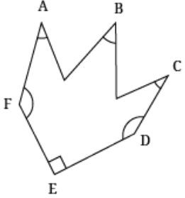
Q.4. Draw the letter ‘M’ such that the angles on the sides are \(40 ^{\circ}\) each and the angle in
the middle is \(60 ^{\circ}\) .
Ans.
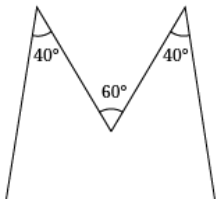
Q.5. Draw the letter ‘Y’ such that the three angles formed are \(150 ^{\circ}\) , \(60 ^{\circ}\) and \(150 ^{\circ}\) .
Ans.
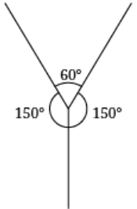
Q.6. The Ashoka Chakra has 24 spokes. What is the degree measure of the angle between two spokes
next to each other? What is the largest acute angle formed between two spokes?
Ans. The angle between two spokes next to each other is \(15 ^{\circ}\) . Largest acute angle between spokes is \(75 ^{\circ}\) .
Q.7. Puzzle: I am an acute angle. If you double my measure, you get an acute angle. If
you triple my measure, you will get an acute angle again. If you quadruple (four times) my measure, you will get an acute angle yet again! But if you multiply my measure by 5, you will get an obtuse angle measure. What are the possibilities for my measure?
Ans. The acute angle can be \(19 ^{\circ}\) , \(20 ^{\circ}\) , \(21 ^{\circ}\) & \(22 ^{\circ}\) .